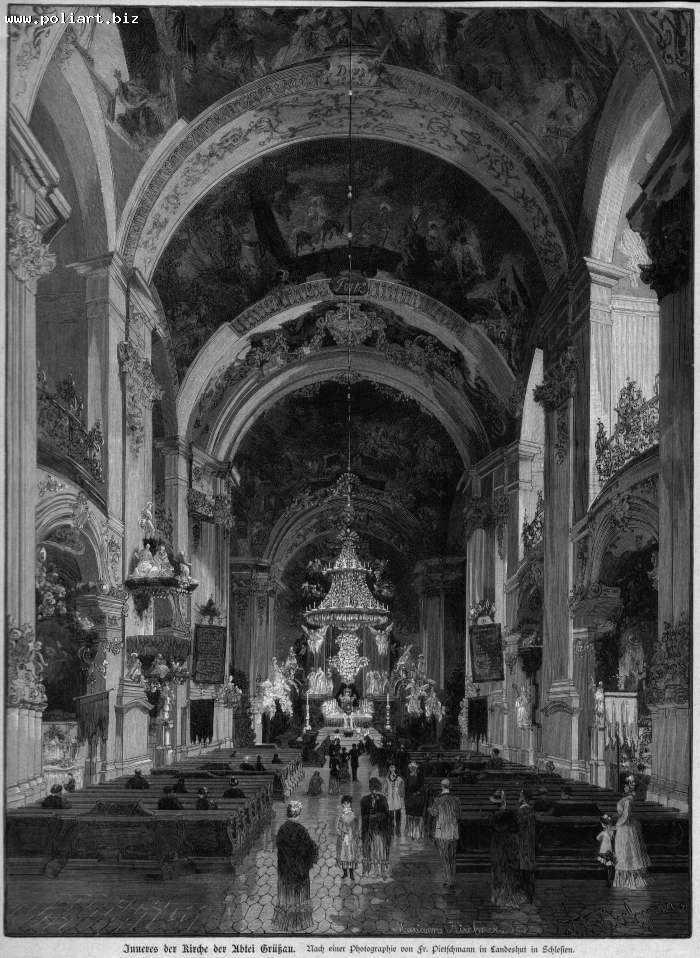
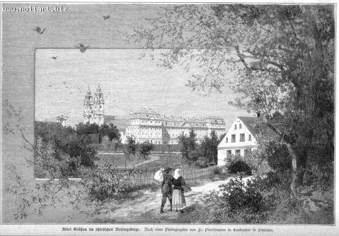
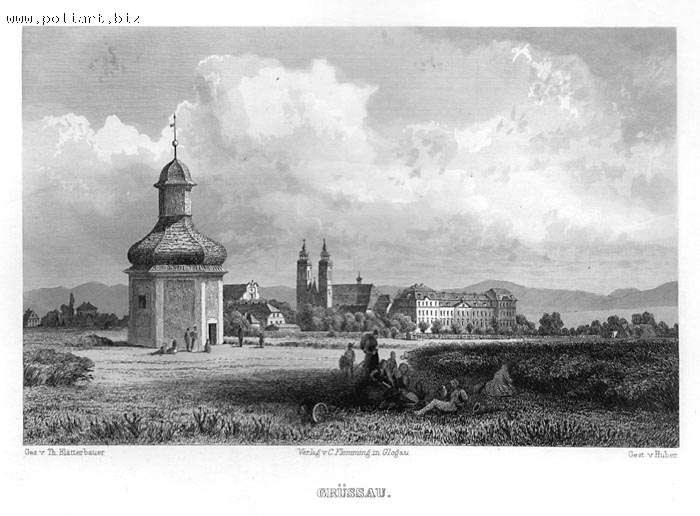
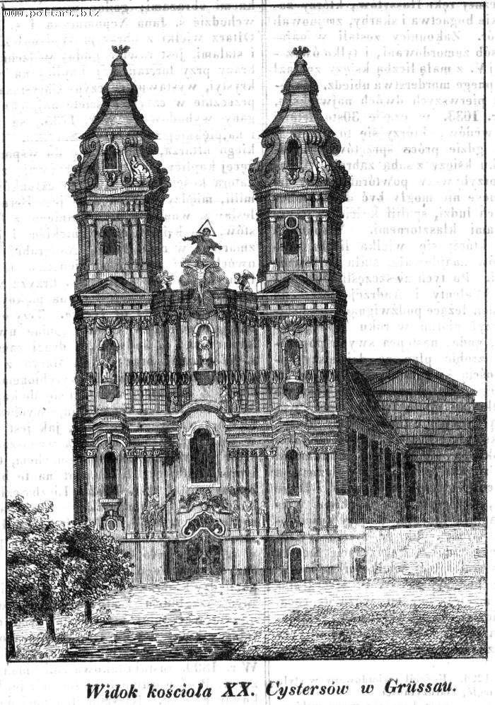

Na stronie http://antykwariat.biz/ natrafi³em na ciekawe ryciny przedstawiaj¹ce klasztor w Krzeszowie. Mi³ym zaskoczeniem s¹ bardzo dok³adne opisy. Pod adresem http://sklep.antykwariat.biz/kat/pl/?searchstring=Krzesz%F3w+%28Kamienna+G%F3ra%29 znajdziemy katalog dotycz¹cy Krzeszowa. Za zgod¹ w³aœcicielki antykwariatu, pani Beaty Kalke, poni¿ej zamieszczam ofertê antykwariatu na dzieñ 16 sierpnia 2004 roku.

| Typ: |
ryc. |
| Has³o (nazwa): |
Kamienna Góra pow. Krzeszów |
| Tytu³: |
"Inneres der Kirche der Abtei
Grüssau. Nach einer Photographie von Fr.Pietschmann in Landeshut in
Schlesien". |
| Autor: |
Marianne Kirchner |
| Wed³ug: |
wg J.J. Kirchner na podstawie fot.
Fr. Pietschmann. |
| Sygnatura: |
Sygn. p³.: "M.Kirchner s.c.
J.J.Kirchner". |
| Technika: |
Drzeworyt sztorcowy |
| Wymiary: |
325x240. |
| Pochodzenie: |
Z: Über Land und Meer ...
1885-1886. |
| Inf. o autorze: |
Th. B. nie notuje M. Kirchner i J.J.
Kirchner. |
| Uwagi: |
Wycinek. |
| Numer katalogowy: |
i00741 |
| cena: |
200 |

| Typ: |
ryc. |
| Has³o (nazwa): |
Kamienna Góra pow. Krzeszów |
| Tytu³: |
"Abtei Grüssau im Schlesischen
Riesengebirge. Nach einer Photographie von Fr.Pietschmann in
Landeshut in Schlesien". |
| Autor: |
Marianne Kirchner |
| Wed³ug: |
wg J.J. Kirchner na podstawie fot.
Fr. Pietschmann. |
| Sygnatura: |
Sygn. p³.: "M.Kirchner s.c.
J.J.Kirchner". |
| Technika: |
Drzeworyt sztorcowy |
| Wymiary: |
159x241. |
| Pochodzenie: |
Z: Über Land und Meer ...
1885-1886. |
| Inf. o autorze: |
Th. B. nie notuje M. Kirchner i J.J.
Kirchner. |
| Uwagi: |
Wycinek. |
| Numer katalogowy: |
i00402 |
| cena: |
160 |

| Typ: |
ryc. |
| Has³o (nazwa): |
Kamienna Góra pow. Krzeszów |
| Tytu³: |
"Grüssau.". |
| Autor: |
Kaspar Ulrich Huber |
| Wed³ug: |
wg Theodor Blätterbauer. |
| Sygnatura: |
Sygn. p³.: "Gez.. V. Th.
Blätterbauer. Verlag v. Flemming in Glogau. Gest. v. Huber". |
| Technika: |
Staloryt |
| Wymiary: |
102x159. |
| Pochodzenie: |
Z: Franz Schroller: Schlesien t.1.
Glogau Carl Flemming [1885]. |
| Inf. o autorze: |
Niemiecki stalorytnik. |
| Uwagi: |
Klasztor cystersów. |
| Numer katalogowy: |
i01036 |
| cena: |
250 |

| Typ: |
ryc. |
| Has³o (nazwa): |
Kamienna Góra pow. Krzeszów |
| Tytu³: |
"Widok koœcio³a XX. Cystersów w
Grüssau". |
| Sygnatura: |
Nie sygn. |
| Technika: |
Litografia |
| Wymiary: |
140x109. |
| Pochodzenie: |
Z: Przyjaciel Ludu 1842. |
| Literatura: |
Grajewski 1972 poz. 22588. |
| Uwagi: |
Zachowana ca³a karta wraz z
tekstem. |
| Numer katalogowy: |
i00401 |
| cena: |
100 |
Gdyby ktoœ zauwa¿y³, ¿e na stronie antykwariatu s¹ nowe ryciny z Krzeszowa a ja ich nie zamieœci³em, to proszê o kontakt :-)